--------------------------------------
Наверняка многие слышали про аниме и сталкивались с такими понятиями как ""Отаку, "Каваи", "Манга", "Ранобэ" и тд. Но действительно ли это просто набор слов? Что ж, предлагаю копнуть глубже.
--------------------------------------
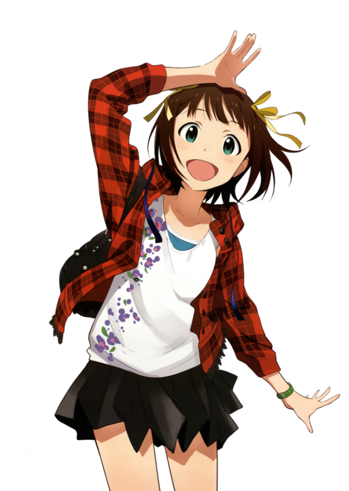
Аниме́, в первую очередь - японская анимация. В отличие от мультфильмов других стран, предназначенных в основном для просмотра детьми, большая часть выпускаемого аниме рассчитана на подростковую и взрослую аудитории, и во многом за счёт этого имеет высокую популярность в мире. Аниме отличается характерной манерой отрисовки персонажей и фонов. Издаётся в форме телевизионных сериалов, а также фильмов. Сюжеты могут описывать множество персонажей, отличаться разнообразием мест и эпох, жанров и стилей. На данный момент, аниме, чаще всего, снимается по так называемой манге - это японские комиксы, выполненные в особом стиле (манга обычно читается слева направо) или же ранобэ - японские книги, выполненые в аниме-стили. Реже могут встречаться аниме, снятые по игре, как, к примеру, "Ангел Кровопролития" и "Школа отчаяния" или же аниме, не являющиеся экранизацией.
~Апокалиптика— разновидность аниме и манги, повествующая о наступлении конца света.
~Боевик — жанр, изобилующий сценами боевого противостояния.
~Боевые исскуства (какуто манга) — жанр аниме, сюжет которого связан с противостоянием мастеров различных боевых искусств. Изначально поджанр спортивных историй.
~Детектив (суири манга) — жанр, описывающий исследование и раскрытие загадочного происшествия (обычно преступления) или серии необычных происшествий.
~Полицейский боевик — жанр, описывающий действия полиции по вычислению и ловле преступника.
~Школьный детектив — жанр произведений, в котором в роли детективов выступают персонажи-школьники.
~Добуцу — аниме о человекоподобных «пушистых» существах. Происходит от японского слова «добуцу», что означает «животное».
~Драма — жанр драматико-трагического повествования. Один из основных признаков — отсутствие ярко выраженного «счастливого конца».
~Идолы — аниме, действие которого связано с поп-звездами и музыкальным бизнесом.
~Икудзи — жанр аниме и манги, в котором повествование строится вокруг необходимости заботиться о ребёнке.
~Исторические произведения (рэкиси манга) — действия разворачиваются на фоне реальных исторических событий. Популярным сеттингом являются Западная Европа и Британия, но большинство таких произведений разворачивается в Японии.
~Дзидайгэки — историческая драма, действие которой разворачивается на фоне событий из истории Японии.
~Самурайский боевик (тямбара) — историко-приключенческий жанр произведений о сражениях самураев и ниндзя.
~Кайто — жанр произведений, в котором основными действующими лицами являются мастерские воры. Герои произведений жанра обычно мастера иллюзий и маскировки, объявляют о своих преступлениях заранее и избегают насилия. Возбуждение от проведённых операций, переодевание персонажей, умные гаджеты, сложные ловушки и противостояние между вором и преследующим его детективом, всегда отстающим лишь на полшага, — главные элементы жанра.
~Киберпанк — жанр, рассказывающий о мире будущего, в котором жизнь определяют компьютерные технологии. Часто картины такого будущего представлены мрачными и пугающими.
~Комедия — жанр, характеризующийся наличием юмористических сцен, в том числе пародий, комедии положений, словесных и прикладных шуток.
~~Моэ — сленговое обозначение для жанра произведений, в которых центральными персонажами являются юные и милые героини. Внимание фокусируется на платонических отношениях и повседневных ситуациях и часто описывается как «милое, просто чтобы быть милым».
~Меха — жанр, характеризующийся активным использованием «гигантских боевых человекоподобных роботов», как правило, самодвижущихся, не имеющих реальных прототипов, обозначаемых этим же словом.
~Мистика — жанр, рассказывающий о взаимодействии людей с сверхъестественными силами, не поддающимся логичному описанию, в отличие от магии в фэнтези. Часто подобное взаимодействие влечет различные моральные проблемы.
~Научная фантастика (НФ) — произведение, действие которого связано с существованием и использованием техники, не существовавшей на момент создания этого аниме. Обычно произведения в этом жанре излагают возможную историю будущего человечества, часто сюжеты связаны с контактами с пришельцами.
~Космическая опера — разновидность научной фантастики, концентрирующаяся на войнах, проходящих с активным использованием космических кораблей.
~Отаку — разновидность аниме, содержащая ссылки на жизнь и деятельность отаку.
~Парапсихология — жанр аниме, действие которого связано с парапсихическими силами (телепатия, телекинез, гипноз).
~Паропанк/Стимпанк — жанр аниме и манги, рассказывающий об альтернативных нашему мирах, находящихся на уровне технического развития Европы конца XIX века. Этот период характеризуется началом революции технических средств передвижения — появление дирижаблей, аэропланов, паровозов, пароходов, паровых автомобилей и всего, что может работать за счет паровых технологий. Паропанк возник как альтернатива киберпанку. Если киберпанк обычно основывается на футуристической эстетике, то паропанк — на эстетике ретро
~Повседневность — жанр, повествующий о жизни обычных людей, чаще всего японцев среднего класса.
~Постоапокалиптика — разновидность аниме и манги, повествующая о жизни после конца света.
~Психологический триллер — жанр аниме, описывающий «злоключения человеческой души». Попадая в тяжелые ситуации, герои таких аниме переживают сложные и непредсказуемые психологические изменения.
~Путешествие между мирами (или исэкай) — жанр, в котором главный герой или герои перемещаются между параллельными мирами, обычно между современной Японией и фэнтези-миром.
~Романтика — жанр, повествующий о любовных переживаниях.
~Рыболовная манга (цури манга) — жанр произведений, связанных с рыбной ловлей.
~Семейная манга (кадзоку манга) — жанр манги, рассказывающий о жизни семьи и детей в ней.
~Сказка — жанр аниме, чаще всего кодомо, экранизация классических сказок.
~Социальный фильм — аниме, рассматривающее актуальные общественные проблемы современности. Нечистые на руку политики, коррумпированные чиновники, лидеры профсоюзов, задержанная или вовсе не выплаченная зарплата, бюрократические махинации и общее народное недовольство по этому поводу составляют главную сюжетную интригу социальных фильмов.
~Спокон — жанр, повествующий о юных спортсменах, добивающихся успеха благодаря своей воле к победе. Название является объединением слов «спорт» и «кондзё» («сила воли»).
~Токусацу — жанр о противостоянии диких монстров и странных супергероев. Изначально обозначал японские игровые фильмы и сериалы с обилием спецэффектов, но позже стал обозначать и другие продукты, выполненные на их основе или с использованием схожих штампов.
~Сэнтай — жанр, рассказывающий о приключениях небольшой постоянной команды персонажей, сражающейся против кого-то или чего-то. Описывает тип японских сериалов, в которых персонажи одеваются в маски и костюмы разных цветов, в частности команду из пяти «разноцветных» персонажей, часто имеющих в своем распоряжении гигантского робота.
~Фэнтези — жанр произведений, рассказывающий о мирах, которыми правит «меч и магия» в противовес технологии в научной фантастике. Кроме людей, персонажами часто являются разнообразные мифологические существа — эльфы, гномы, драконы, а также боги и демоны.
История аниме корнями уходит к началу XX-го столетия, когда японцы стали проявлять заметный интерес к иностранным техникам создания анимационных фильмов.
В эти времена анимационная сила только начинала набирать обороты. Японцы пытались создать что-то свое на почве иностранных фильмов. В основном, анимации длились до 15 минут.
Старейшим известным аниме, сохранившемся до наших времен, является «Кацудо Сянин». Оно состояло из пятидесяти нарисованных на ленте целлулоида кадров. Изображённый на них мальчик рисует иероглифы, означающие «движущиеся фотографии» и использующиеся в то время для обозначения слова «кино», затем поворачивается к зрителю, снимает шляпу и кланяется.
Аниме демонстрировались на публике и собирали деньги в кинотеатрах. В эпоху немого кино работы отличались простотой и понятностью, родилось на свет произведение «Гора Обасутэ», которое является старейшим известным именованным аниме.
В 1943 году, когда на японцев произвели впечатления цветные американские фильмы, появилось первое полнометражное аниме "Момотаро - морской орёл".
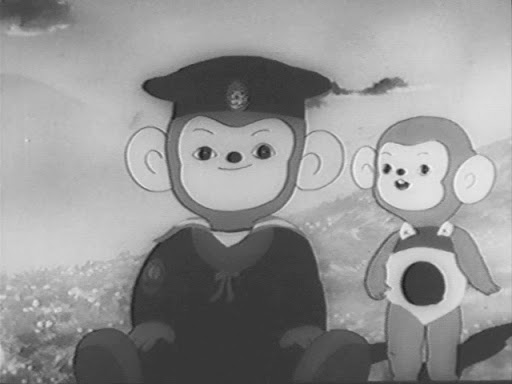
В начале 1950-х годов появились первые крупные студии, такие как "Ниппон дога" так и «Тохо эйга». На них снимались полнометражные аниме.
В 1956 году появилась довольно крупная студия «Toei Animation», озданная Хироси Окавой, которая снимала цветные аниме, в частности «Легенда о Белой Змее» - первым цветным полнометражным аниме.
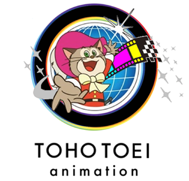
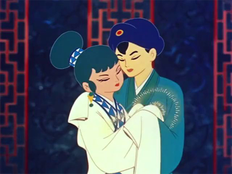
Toei ознаменовало собой начало нового периода в развитии аниме — периода профессионального творчества. Первые полнометражные фильмы студии очень близко следовали канонам произведений Диснея. Значительным вкладом ранней Toei в современное аниме стало использование «ключевых сцен». Широко используемый сегодня метод сокращения затрат на анимацию состоит в том, что отдельные, значительные в визуальном смысле кадры прорисовываются с гораздо большей детализацией, чем общий поток видео. Компания существует и до сих пор, оставаясь самой старой известной японской анимационной студией.
В 1961 году Осаму Тэдзука основал студию «Mushi Productions». Так как в ранних аниме-сериалах 60-х годов было популярно изображать героического ребёнка или подростка, который обладает сверхчеловеческими силами и борется со злом, то в 1963 году студия выпустила аниме под названием «Astro Boy» («Tetsuwan Atomu») - аниме, котрое считают «бумом» и начальной точкой современного вида аниме: использовался сквозной сюжет и постоянные персонажи, с которыми на протяжении сюжета происходили определённые изменения — они появлялись, исчезали, взрослели, старели.
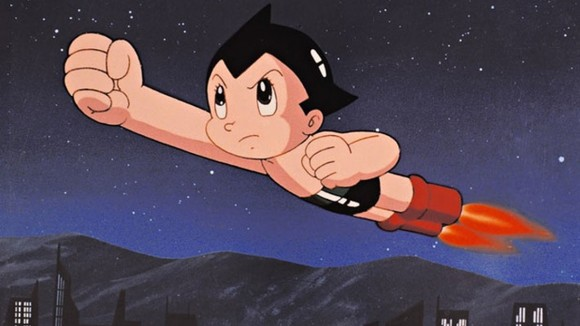
«Tetsuwan Atomu» стал одним из первых аниме-сериалов, продемонстрированных по американскому телевидению. К заслугам «Mushi Productions» также можно приписать основания канонов жанров сёдзё и махо-сёдзё. Осаму Тадзуку прозвали «Богом манги».
Для аниме поздние 1960-е годы ознаменовались экспериментами с формой и содержанием. К тому времени в анимации установился канон жанра сёнэн — мальчик, обладающий необычными способностями, имеет цель и для её достижения применяет свои способности, а в процессе преодоления испытаний взрослеет. Также конец 60-х годов считается периодом перехода из чёрно-белой анимации в цветную. Одним из первых цветных аниме-сериалов стал "Dolphin Oji", который, однако, не завоевал большую популярность.
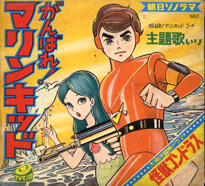
В то время аниматоры уже имели большой опыт в своём деле, а индустрия аниме стала достаточно прибыльной. Расширились жанровые рамки анимационных сериалов, формировались также и новые жанры. Многие каноны телесериалов того времени получили развитие в дальнейшем. За пределами Японии аниме практически не распространялось. Обычная продолжительность анимационных сериалов тех лет составляла приблизительно 20—30 серий, однако во многом она зависела от популярности конкретного аниме.
Toei Animation постепенно оставила создание стилизованных под Диснея мюзиклов и переключилась на производство телесериалов. Аниматоры, работавшие на Mushi Production, разошлись по вновь созданным студиям.
Основную часть зрительской аудитории составляли дети, для которых и создавалась бо́льшая часть аниме. Основными героями сериалов для детей, обычно, становились персонажи известных детских художественных произведений или разумные животные.
Возник жанр «Меха», основу которого заложил Го Нагаи – известный мангака. В ходе данный жанр изменялся на «Космические оперы». Характеры персонажей прорабатывались более глубоко, что позволяло рассматривать одни и те же проблемы с разных точек зрения.
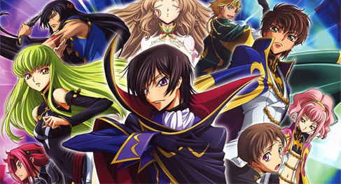
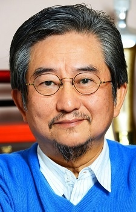
В период 1970-х годов продолжали выпускаться сериалы жанра махо-сёдзё, которые имели частичные, а порой и значительные отклонения от установленных стандартов. Зарождался эротический юмор (который стал в дальнейшим искринкой аниме).
Снимались также сериалы, главных персонажей которых можно охарактеризовать как «антигероев». Популярнейшим стал сериал «Люпин III», фильм которого прозвали «лучшим фильмом в истории аниме».
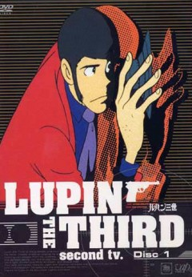
В течение 1970-х годов аниме начало постепенно проникать в западную культуру, однако зачастую оно было не переведено на соответствующие языки, либо перевод осуществляли поклонники.
Период 1980-х годов принято называть «Золотым веком аниме». Среди подростков, родившихся в 1960-х годах и уже знакомых с аниме, возник спрос на более серьёзные произведения, отвечающие их интересам. Первые поклонники аниме появлялись также и в других странах, а сама японская анимация начала постепенное вхождение на мировой рынок.
Происходило зарождение субкультуры отаку (в Японии под данным термином понимается преданный поклонник чего-либо, а за её пределами — поклонник аниме и манги), которая в дальнейшем оказала существенное влияние на развитие индустрии аниме.
Популярным был жанр «Фантатическая комедия», а также продолжал процветать «Махо Сёдзё». Активно снимались полнометражные анимационные фильмы.
Помимо традиционного показа сериалов по телевидению появилось отдельное направление сбыта, называемое OVA. К середине 1980-х годов оно получило широкое распространение на рынке домашнего видео. OVA-произведения не показывались на телевидении, а сразу продавались на видеокассетах. Впоследствии они оказали существенное влияние на развитие аниме.
Во второй половине 1980-х годов выпуск научно-фантастических аниме пошёл на убыль, а среди японских анимационных лент преобладали произведения жанра киберпанк.
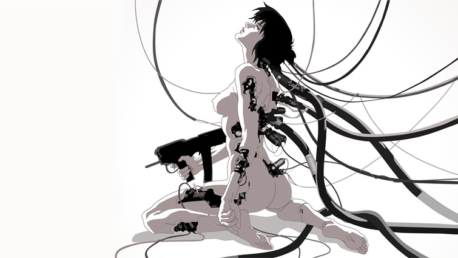
Успех отдельных фильмов привёл к увеличению финансирования прочих проектов, и появлению таких высокобюджетных творений, как "Char's Counterattack"(1988) и "Arion" (1986). Кульминацией затрат на создание аниме-лент стали два самых дорогостоящих на тот момент аниме-фильма: «Wings of Honneamise» (1987) и «Акира» "Aкира" (1988). Большая часть этих фильмов, однако, не окупилась в прокате. И «Акира», и «Wings of Honneamise» провалились по сборам во время своего первого показа в кинотеатрах. Кризис вложений, возникший вследствие таких удручающих результатов, стал причиной закрытия многих аниме-студий, другим же пришлось отказаться от экспериментов и вернуться к проверенным временем решениям и сюжетам.
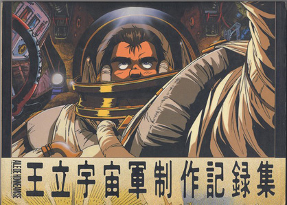
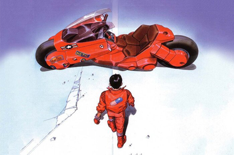
Одной из немногих безболезненно перенесла спад финансирования "Studio Ghibli", с завидным постоянством выпуская пользующиеся успехом фильмы. Очередная их лента, «Ведьмина служба доставки», вышедшая в 1989-м, заняла первое место по кассовым сборам в том году, собрав более 40 миллионов долларов за время показа в кинотеатрах. Несмотря на провал в японском прокате фильма «Акира», за пределами страны его ждал успех. Будучи показан во многих странах Европы и Америки, фильм стал весьма популярен, и даже до некоторой степени представлял собой на Западе японскую анимацию тех лет.
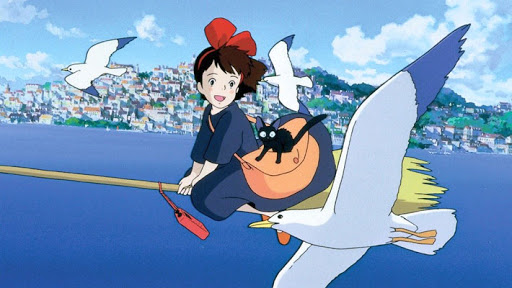
Со смертью Осаму Тэдзуки в 1989 году, финансовым кризисом и увеличением международного интереса к аниме, период, называемый «золотым веком» принято считать законченным.
К началу 1990-х годов стилистика аниме претерпела изменения. Оно стало более изящным, и при этом производители увеличили средства на его создание. Широкое распространение получил стиль «каваий» (японское слово, означающее «милый», «прелестный», «хорошенький», «славный», «маленький», «крошечный»). Появился новый вид аниме – аниме, созданное по играм. Возрос интерес к жанру «Фентези». Продолжали выходить аниме жанра «Сёдзё».
В начале 1990-х аниме переживало кризис финансирования. Бюджеты занижались и многообещающие проекты сворачивались из-за недостатка средств. Снижалось качество аниме-сериалов и фильмов, связанное с возвратом к проверенным временем сюжетам и конструкциям; сериалы становились короче — нормой стали аниме из 13 или 26 серий, хотя ранее эта цифра считалась минимальной.
В 1995 году выходит ставший впоследствии культовым телесериал «Евангелион». Его режиссировал Хидэаки Анно из студии "Gainax". Сериал продолжает развитие концепций жанра меха — присутствующие в нём роботы сочетают в себе как механические детали, так и биологическую материю; в сюжете также есть намёки на божественное происхождение Евангелионов. В сериале сочетаются идеи и мотивы, интересные как поклонникам аниме, так и более широкой аудитории. В короткие сроки сериал стал невероятно известен в Японии, а вскоре и среди поклонников аниме по всему миру. История настолько зашла зрителям, что десять лет спустя объёмы продаж сопроводительных товаров — фигурок героев, коллекционных предметов — всё ещё достаточно велики.
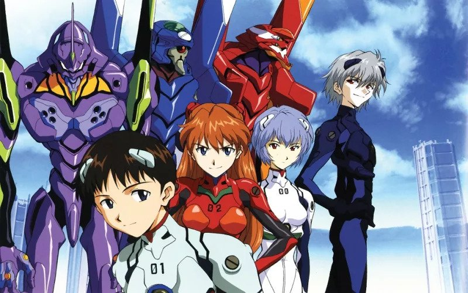
Влияние «Евангелиона» на аниме-индустрию было столь велико, что породило даже ряд так называемых «пост-Евангелион» сериалов. Большинство из них также относятся к жанру меха и имеют какой-либо религиозный, философский или психологический подтекст.
С развитием компьютерных технологий в аниме всё чаще используется компьютерная графика. В последнее время трёхмерные анимационные вставки появляются даже в не слишком масштабных проектах.
Менее заметным на первый взгляд, но гораздо более важным достижением стал полный переход на компьютерную обработку графики. Сегодня графика практически любого аниме переводится после отрисовки в компьютерный формат, либо рисуется сразу при помощи графических планшетов. Вся работа по комбинации изображений, созданию анимации, наложению звука и музыки проводится в цифровой форме. Перевод видео на плёнку может быть выполнен лишь на последнем этапе; впрочем, с развитием телевидения, и это сегодня подчас не требуется.
С увеличением числа производимых сериалов повышается и количество нестандартных, экспериментальных лент. Обычная для аниме свобода творчества режиссёра даёт возможность воплощать в жизнь самые неожиданные идеи. Однако не убывает и число традиционных сериалов, сделанных по всем канонам жанров.
Растущая популярность, с другой стороны, стала причиной возникновения такого явления, как аниме, направленное исключительно на аудиторию отаку. После невероятного успеха «Евангелиона» 90-х годов многие студии пробовали себя в создании сериалов, которые могут стать для поклонников японской анимации «классикой».
Ещё одним необычным феноменом последних лет стал японский аниматор Макото Синкай, создавший свои первые короткометражные аниме-фильмы «Она и её кот» (1999, 5 мин.) и «Голос далёкой звезды» (2002, 30 мин.) в одиночку или при помощи своего друга. Получив, таким образом, внимание общественности и финансирование, в 2004 году он выпустил полнометражный полуторачасовой фильм «За облаками» (Beyond the Clouds, the Promised Place).
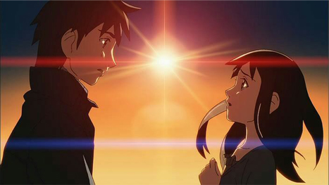
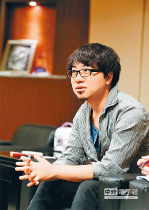
Другим примером «ручной» работы над фильмом стало творчество лауреата «Оскара» за 2009 год Кунио Като.
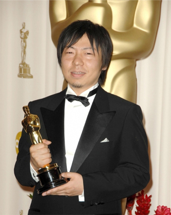
Аниме стало важным видом анимации, в котором расскрывается философский смысл, а также людские идеалы. Будучи популярным на весь мир, его стиль и смысл меняется постоянно. На данный момент, японской анимации уже более 100 лет...
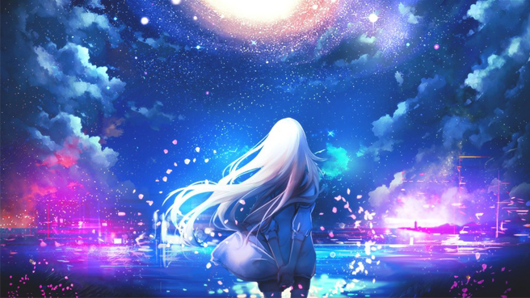
Основана в 1956 году.
Наиболее известные работы: «Темнее черного», «Стальной алхимик», «Бездомный бог», «Пожиратель душ», «Волчий дождь», «Готика», «Некогда вечный», «Арена Ангелов», «Ковбой Бибоп».
Основана в 1979 году.
Наиболее известные работы: «Крутой учитель Онидзука», «Блич», «Наруто», «Токийский гуль», «Боруто», «Вельзепуз» и несравненная «Йона на заре».
Основана в 1956 году.
Наиболее известные работы: ««Гинтама», «Код Гиас», «Тигр и кролик», «Мобильный воин Гандам».
Основана в 1946 году.
Наиболее известные работы: «Приятно познакомится, Бог», «Детектив Конан», «Трусливый велосипедист», «Ди Грэй-Мен», «Рыцари Зодиака», «Волшебник Кайто», «Люпен III», «Озорной поцелуй», «Бакуган».